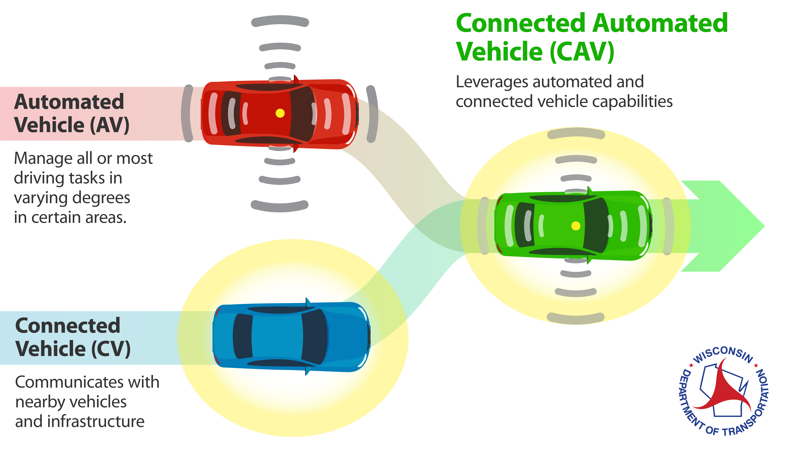
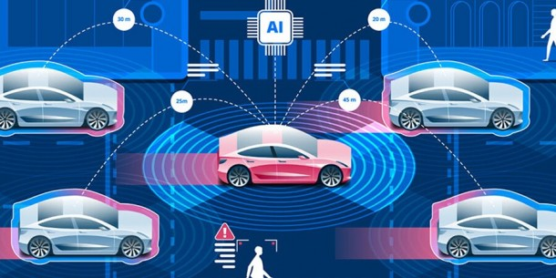
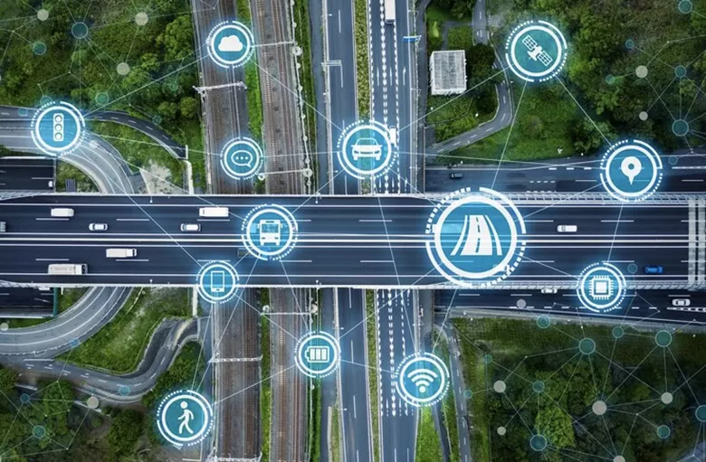
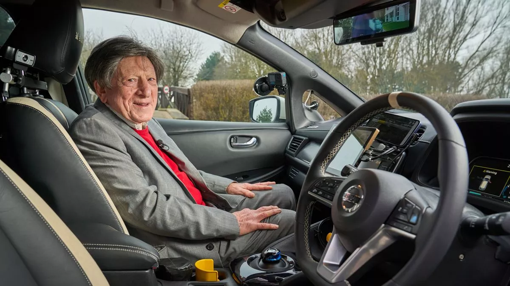

Connected Autonomous Vehicles (CAVs) are a transformative innovation in the transportation industry,
combining autonomous driving capabilities with advanced connectivity features. These vehicles can communicate
with each other, infrastructure, and other road
users to enhance safety, efficiency, and convenience.

The integration of technologies such as artificial intelligence (AI), sensors, and vehicle-to-everything (V2X) communication is driving the development and deployment of CAVs, promising a future where transportation is smarter and more sustainable.

By using sensors, cameras, and AI, these vehicles can detect and respond to hazards more quickly and accurately than human drivers.

By communicating with each other and traffic management systems, CAVs can optimize traffic flow, reduce congestion, and improve overall transportation efficiency.

CAVs can provide greater mobility options for individuals who are unable to drive, such as the elderly or disabled.
By addressing safety, efficiency, environmental impact, and accessibility, Connected Autonomous Vehicles (CAVs) are poised to revolutionize the transportation industry, making it safer, more efficient, and more sustainable.
Calvin Teo Yee Jie | B240253C
B240253C@sc.edu.my
+6019-9698726
Web Designer